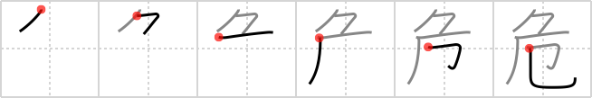

危
← →
dangerous

Reading:
On-Yomi: キ — Kun-Yomi: あぶ.ない、あや.うい、あや.ぶむ
Heisig story:
Bound up . . . unlucky.
Koohii stories:
1) [nyquil] 11-2-2007(281): You're bound up by ropes to an unlucky person. It's dangerous, because whatever happens to him will happen to you too.
2) [greenapple] 24-5-2006(37): While rock climbing you are bound to the cliff by just your fingerprints, which is why it's so dangerous.
3) [fuaburisu] 7-2-2006(28): …. continuing from the previous frame : it was very dangerous for the policeman to go down the cliff side to gather fingerprints, so his colleagues bound him with a rope just in case.
4) [j0k0m0] 23-1-2010(18): Being unlucky is bound to be dangerous. 危ない （あぶ）ない.
5) [zodiac] 5-12-2008(15): The unlucky person, the jinx, was bound up as he was considered dangerous.